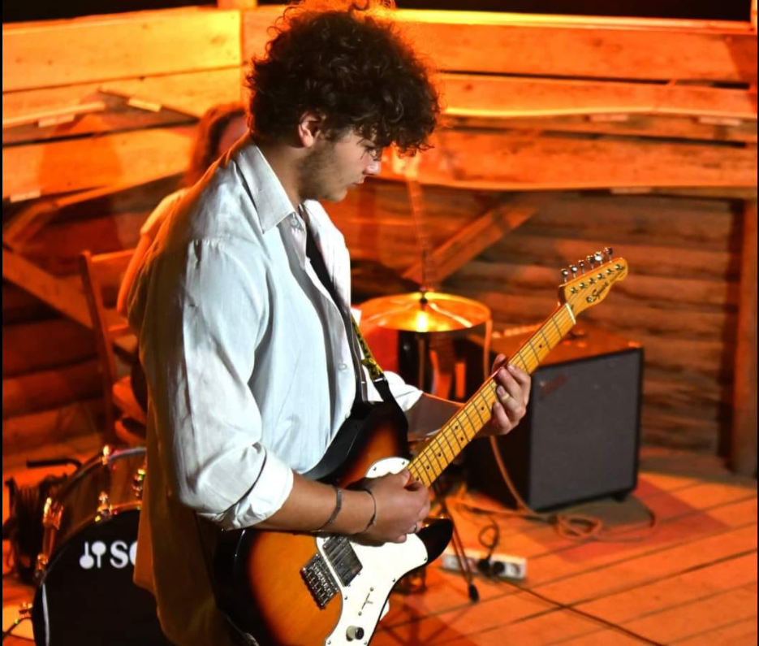
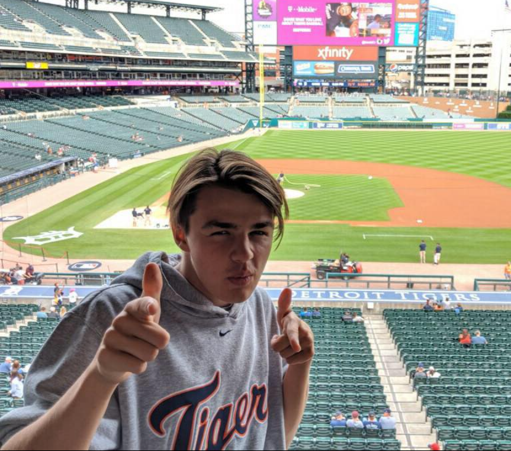
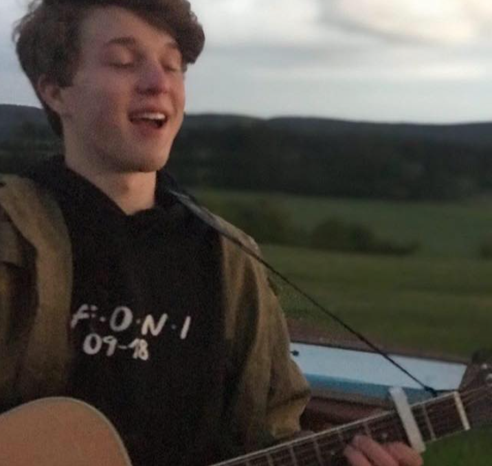
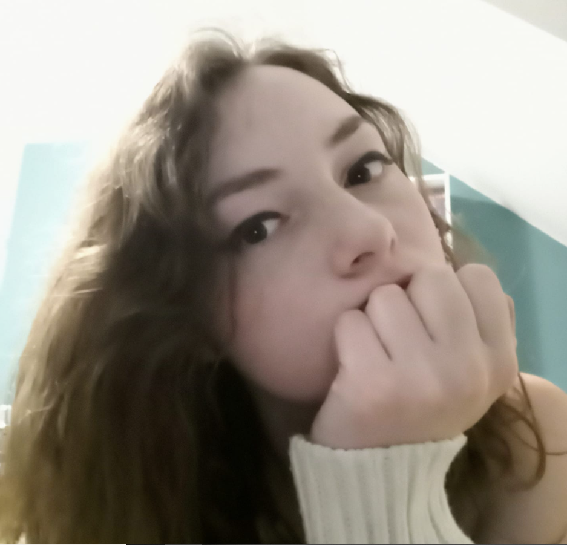

Honza Karlík - basák
Honza je basák v Loubandu. Je to starší bratr Péti. Na tábor Loukaři, který je s námi velmi úzce propojen, jezdí už od útlého dětství. Dokonce téměř od narození.
Takové štěstí bohužel nemá každý z nás.
V kapele je znám tím, že si zapomíná naladit basu, bohužel i při koncertě.
Také je to ten, který celý nápad s kapelou vymyslel.
Petr Karlík - hlavní kytarista
Péťa zastupuje v Loubandu roli hlavního kytaristy. Stejně jako Honza na Loukaře jezdí odmalička. Je to taky nejmladší člen naší kapely.
Na kytaru se naučil hrát sám a hrál na ní už dávno před vznikem naší kapely.
Na táboře každý večer hraje jak dětem tak i vedoucím.
Také z tohoto důvodu jde obvykle spát mezi posledními.
 Eliáš Gaydečka - pianista
Neboť byl Eliáš rok v Americe, tak s námi nestačil cvičit na koncert na táboře v roce 2020. Proto se řádně připoji naši kapele až po prázdninách.
Jeho hlavním úkolem je hrát co nejlíp na klavír, což mu, dovolíme si tvrdit, vychází.
Ovšem je velmi zaneprázdněný a tak už o něm celá kapela ví, že je to "ten co nepřijde".
Vít Křelina - zpěvák a kytarista
Vítek hrdě nastoupil hlavně jako zpěvák a jako příležitostný kytarista. Je proslulý svojí legendární taneční kreací k písničce Get Lucky, kterou rozhýbe celé publikum.
Má také svůj jedinečný a charakteristický hlas, kterým dokáže zazpívat téměř cokoli.
Velmi rád používá reverb (zvukový efekt) a to co nejsilněji to jde.
Jolana Dubišarová - bubenice
Jediná žena v kapele je Jolanka zastupující drsnou roli bubenice. Přes občas brutální chlapecké prostředí v kapele ještě zůstala.
Jako jediný člen, která nežije v Praze, prohlubuje vztah Pražáků a Kladeňáků. Je to velmi těžká práce a téměř nemožná.
 Louband a my
Louband a my